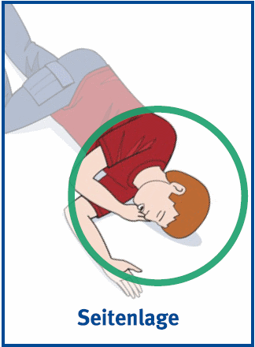

6 Seitenlage
- Beine der bewusstlosen Person strecken
- Nahen Arm angewinkelt nach oben legen, die Handinnenfläche zeigt dabei nach oben
- Ferne Hand der bewusstlosen Person fassen und Arm vor der Brust kreuzen, Hand nicht loslassen
- Mit der anderen Hand an den fernen Oberschenkel (nicht im Gelenk!) der bewusstlosen Person greifen und Bein beugen
- Bewusstlose Person zu sich herüber ziehen
- Hals überstrecken und Mund leicht öffnen
- An der Wange liegende Hand so ausrichten, dass der Hals überstreckt bleibt
- Ständige Atemkontrolle
